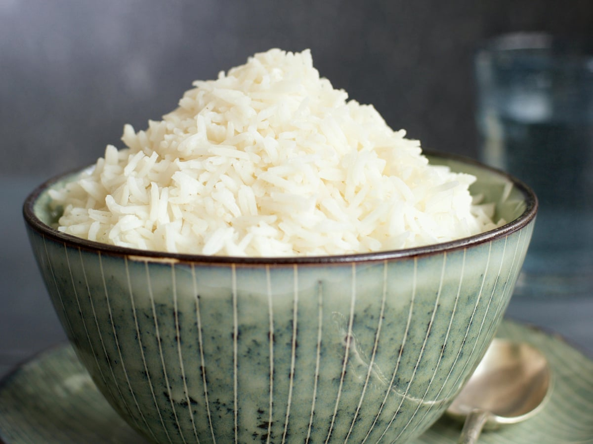

Steamed rice

What is it?
Steamed rice is one of the hardest things to cook for us westerners. Here is a simple way to do it.
Ingredients
- 1 cup of rice
- 2 cups of water
- 1 pinch of salt
- 1 beef flavored cube
Steps
- Put the salt and the beef flavored cube into the water and boil it.
- Put the rice into the water and decrease heat to 4 or 5/8.
- Wait in front of the stove because from one minute to the next it might be overcooked.
- Take a grain of rice on your thumb and crush it between your fingers. When only a tiny part in the middle is still hard,
put your pan out of the stove and cover it.
- Let your rice cook. Wait 10 minutes or let it for longer.
- When you lift the lid, delicately mix the rice. It should ready to go.
- Serve.
Back to the main page